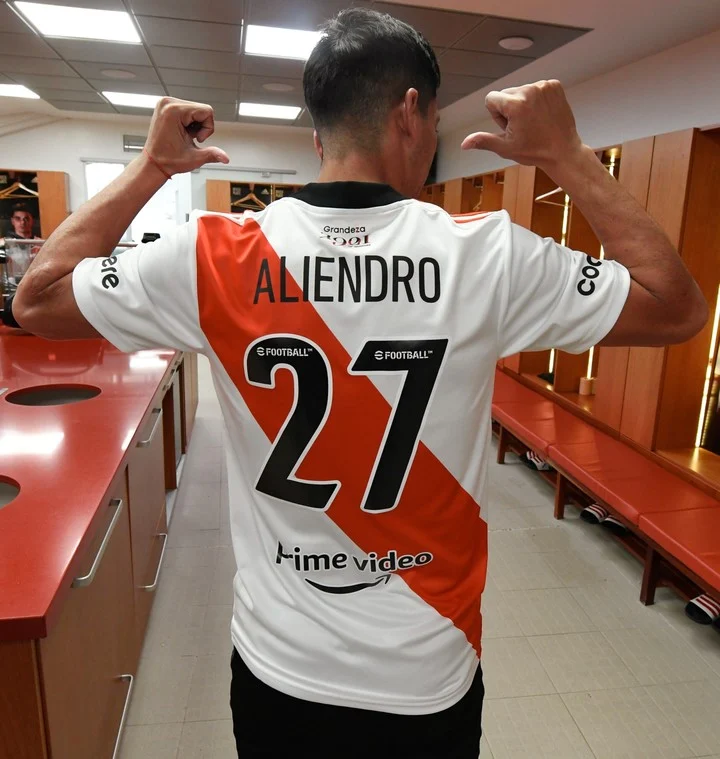
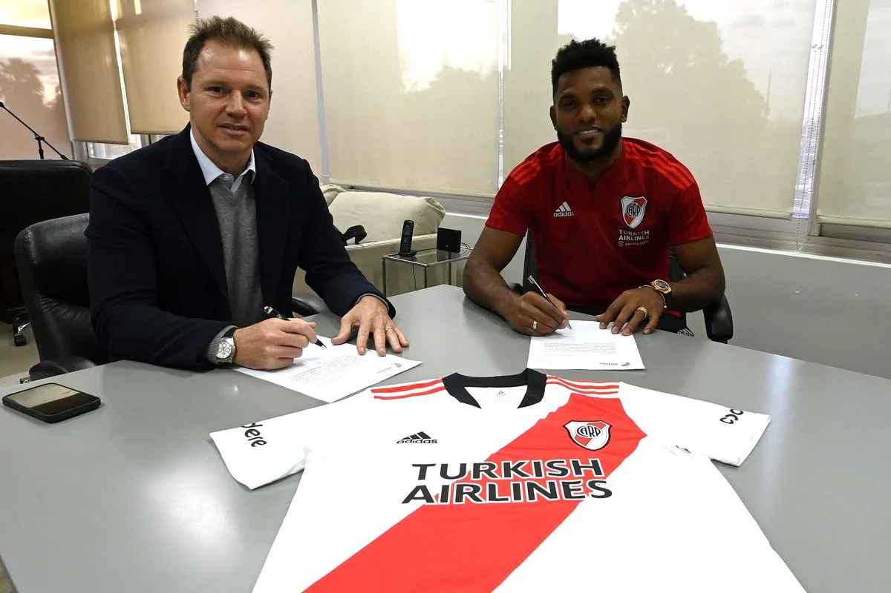
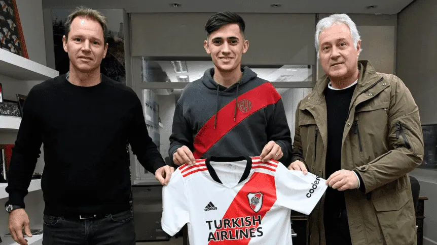

El equipo de Marcelo Gallardo venció 3-0 a Barracas Central por los 16avos de final de la Copa Argentina,
con grandes conquistas de Milton Casco y dos de Agustín Palavecino.
Con la intención de tomar el protagonismo, River salió a presionar a Barracas Central desde el inicio.
Agustín Palavecino fue el primero en probar a Maximiliano Gagliardo con un remate desde fuera del área.
Luego llegó el golazo de Milton Casco para abrir el marcador: el defensor controló un rebote y
metió un derechazo tremendo que se metió en el ángulo derecho del arquero rival.
Barracas Central respondió y contó con dos chances claras para igualar: en la primera, Bruno Sepúlveda armó una buena jugada individual,
pero se encontró con la gran respuesta de Franco Armani; en la otra, Neri Bandiera metió un cabezazo cruzado que pasó muy cerca del arco riverplatense.
Sin embargo, River terminó mejor el primer tiempo con dos chances en los pies de Santiago Simón: un remate que tapó Gagliardo luego de una gambeta y un centro que también sacó el arquero.
El Millonario no pasó sobresaltos en el segundo tiempo, controló a Barracas Central y sobre los 20 minutos llegó al segundo grito,
otro golazo, luego de una jugada colectiva que finalizó con un exquisito taco de Rodrigo Aliendro y una definición de caño de Palavecino.
En el tramo final, River tuvo que acomodarse en defensa luego de la expulsión de David Martínez por doble amonestación.
El 3-0 también fue una obra de arte de Palavecino. El mediocampista se acomodó fuera del área y sacó un derechazo fenomenal que dejó inmóvil a Gagliardo.
Así, encaminó la clasificación a los octavos de final de la Copa Argentina, instancia en la cual se medirá con Defensa y Justicia.
River presentó a sus refuerzos
Este martes, en el predio de Ezeiza, Jorge Brito y Marcelo Gallardo participaron de la presentación oficial de Rodrigo Aliendro, Miguel Borja y Pablo Solari.
Las declaraciones de los futbolistas
Aliendro
-“Tuve varias posibilidades, pero la verdad es que el llamado de Marcelo fue muy importante.
Estoy muy contento de estar acá y espero estar a la altura de lo que es el Club.
La calidad de personas que hay es fundamental para seguir por este camino y conseguir los objetivos”.
-“Es el mayor desafío para mí. El partido de la Copa fue un golpe duro, pero con Barracas Central hicimos un buen partido,
todavía me falta para rendir de la manera que yo quiero”.
-“Fue largo el camino para llegar acá y lo estoy disfrutando. Lo valoro y espero poder rendir”.

Miguel Borja
-“Me siento muy bien. Fueron unos días muy especiales para mí, se vino trabajando muy bien con el equipo, con el profe”.
-“Sabemos la historia que marcó a los colombianos acá. Hace poco hablé con Borré y me contaba que era un Club muy completo,
con un grupo humano muy humilde”.
-“Jugar acá es una responsabilidad enorme, con todos. Me dieron la confianza y espero aprovecharlo al máximo”.
-“Julián dejó una huella, pero vengo pensando en lo que puedo aportar desde mi lugar.
Tenemos un excelente grupo para poder hacer historia”.
-“Acá se juega a otro ritmo, eso marca la diferencia a nivel internacional”.

Pablo Solari
-“Fue muy emocionante cuando recibí el llamado, fue muy emocionante que se me dé este paso tan importante en mi carrera.
Le tengo mucho aprecio al Club. Estoy muy contento, me llena de orgullo a mí y a mi familia. Espero estar a la altura”.
-“Estos días los disfruté al máximo, es algo que soñé desde chiquito. Es un orgullo gigante”.
-“Jugar en River es todo, estoy orgulloso por todo el sacrificio que hice para llegar acá”.

Gallardo sigue de cerca la recuperación de los lesionados en River
El entrenador de River Plate, Marcelo Gallardo, que tuvo que hacer tres cambios ante Vélez Sarsfield por lesiones y
que tiene a Paulo Díaz, Matías Suárez y Enzo Pérez en el parte médico,
sigue de cerca estas recuperaciones de cara al partido del jueves ante Gimnasia y Esgrima La Plata.
El uruguayo Nicolás de la Cruz sufrió un golpe en el muslo de la pierna derecha,
Agustín Palavecino una paralítica en la pierna izquierda y Esequiel Barco se retiró con una molestia en la rodilla izquierda.
Por esa razón, promediando el segundo tiempo del partido ante Vélez los tres volantes tuvieron que dejar el campo de juego y
por esos traumatismos se vieron obligados a realizar tareas más livianas esta tarde en el River Camp.
En cuanto al zaguero chileno Díaz, que el fin de semana no fue parte de la convocatoria porque arrastra una molestia en la cadera y
en el isquiotibial izquierdos, será probado mañana para determinar si regresa al primer equipo ante el "Lobo" platense.